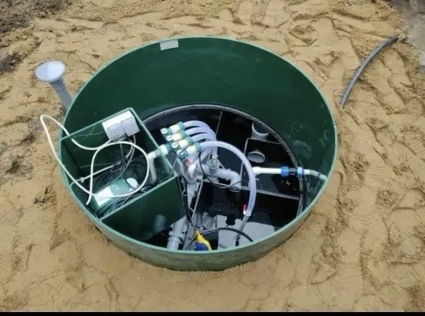
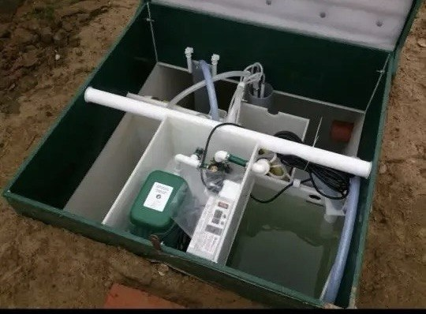
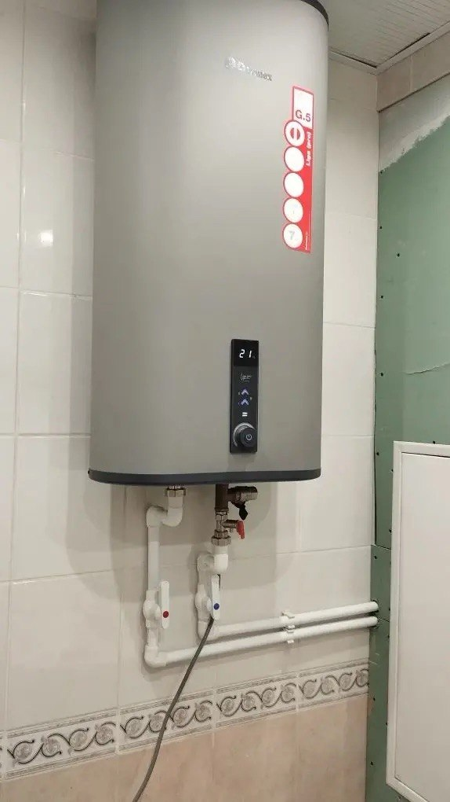
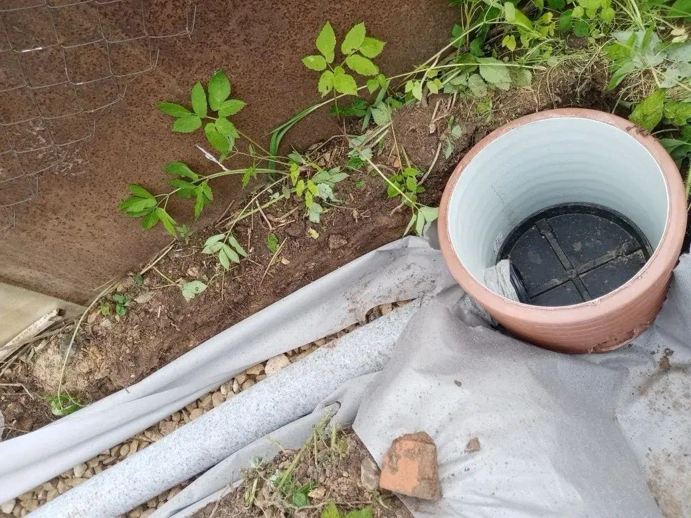
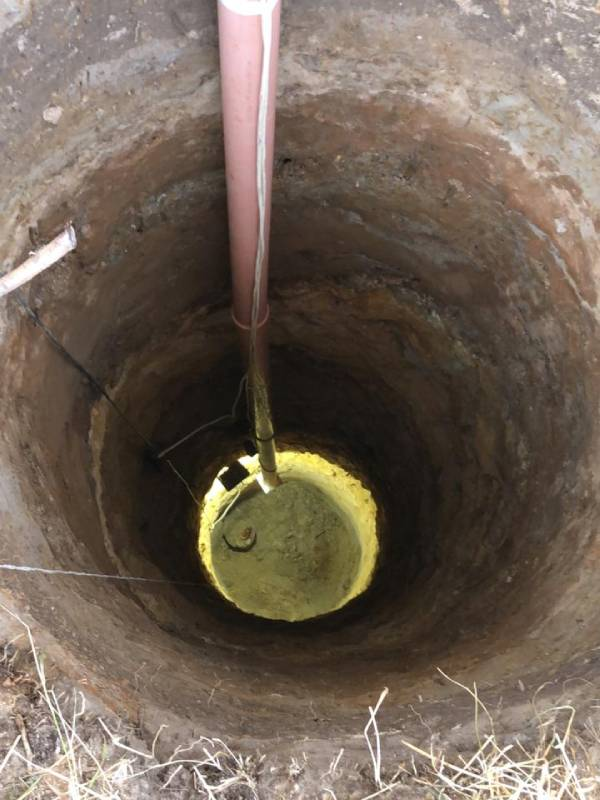
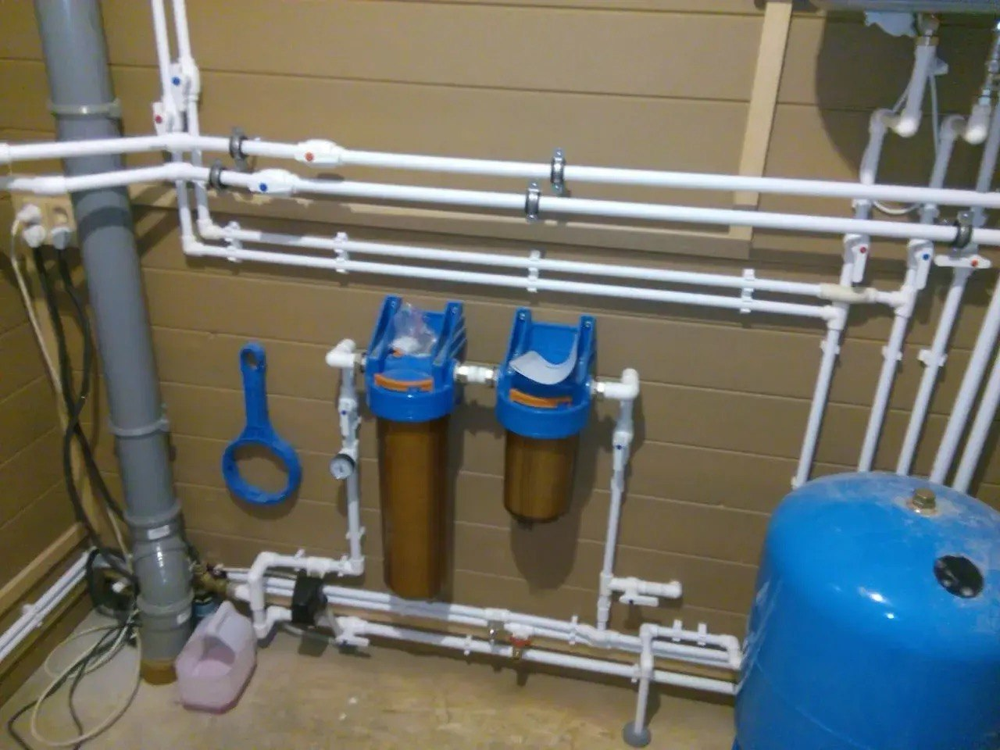
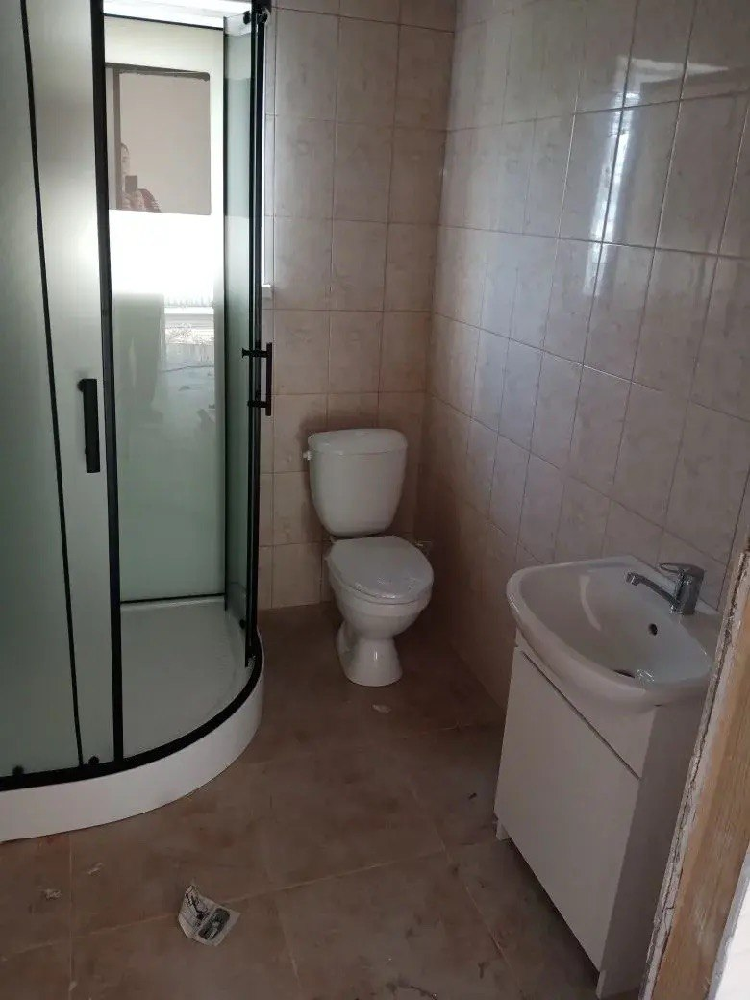
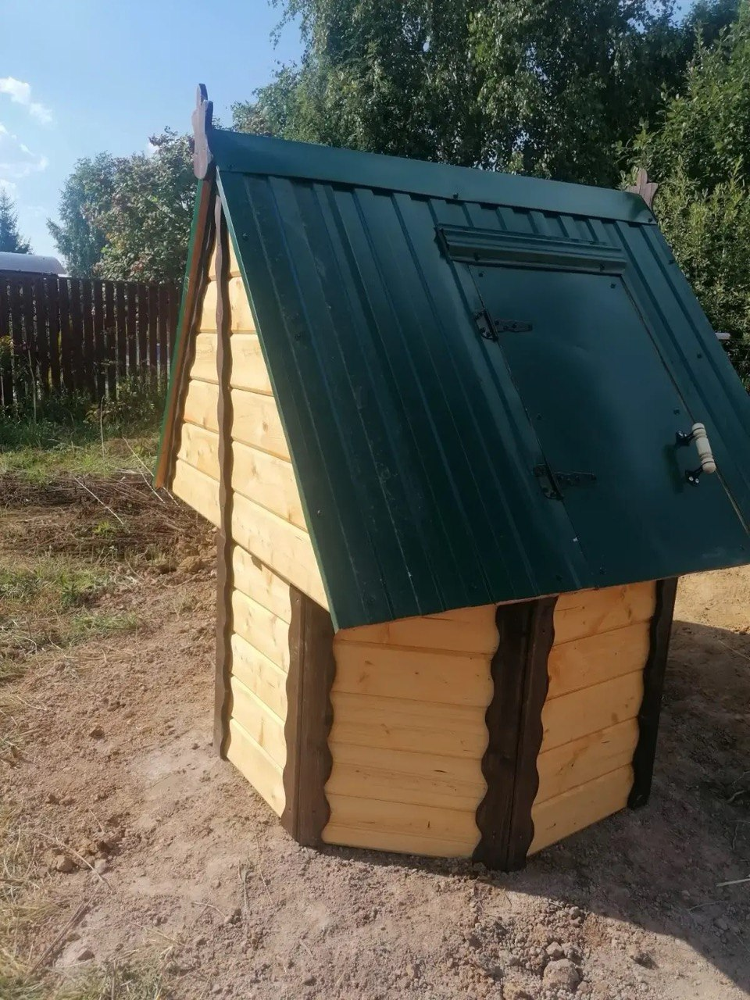
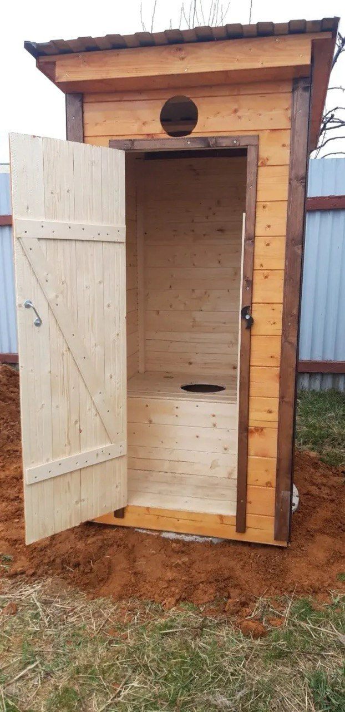
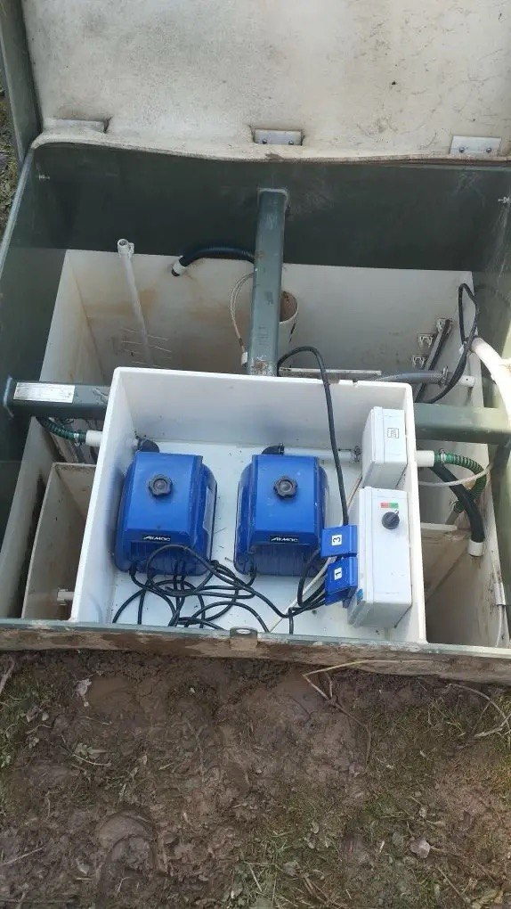

Какой колодец выбрать для загородного дома?
Разбираем плюсы и минусы шахтных и трубчатых колодцев. Что лучше для постоянного проживания? Читайте в нашей статье...
Читать статью →Профессионально, с гарантией, без грязи на участке
От 2 до 15 колец. Работаем вручную и с техникой.
Удаление ила, дезинфекция, восстановление дебита.
Заделка швов, замена колец, насосное оборудование.
Установка под ключ. Биологические очистные станции.
Подключение водонагревателей любой сложности.

Монтаж под ключ. Без запаха и откачки.
от 85 000 ₽
Установка септика для загородного дома.
от 75 000 ₽
Подключение водонагревателя любой сложности.
от 5 000 ₽
Отвод воды с участка, защита от подтоплений.
от 2 500 ₽/м²
Профессиональная копка с установкой колец.
от 3 500 ₽/кольцо
Монтаж водоснабжения от колодца или скважины.
от 25 000 ₽
Под ключ: вода, канализация, отделка.
от 40 000 ₽
Полный цикл работ на участке.
от 45 000 ₽
Подключение сантехники в доме.
от 2 500 ₽
Ремонт и обслуживание насосного оборудования.
от 3 000 ₽Заказывал чистку колодца на даче. Вода была мутная с запахом. Ребята приехали быстро, за день всё сделали. Вода стала чистая и прозрачная. Спасибо!
15 марта 2025Копали новый колодец. Всё сделали качественно, без грязи на участке. Цена договорная, никаких доплат не было. Рекомендую!
2 февраля 2025Чистили колодец после зимы. Работали аккуратно, всё объяснили. Теперь знаю, что раз в 2-3 года нужно чистить. Доволен.
10 января 2025Поделитесь впечатлением о нашей работе
✅ Все отзывы проходят модерацию. Спасибо, что делитесь опытом!
Центр района
Выезд 0 ₽Всё направление
Выезд 0 ₽Дачные участки
Выезд 0 ₽Пригород и область
Выезд 0 ₽Уточняйте по телефону
Звоните!📍 Работаем в Одинцово, Одинцовском районе и ближайших населённых пунктах

Разбираем плюсы и минусы шахтных и трубчатых колодцев. Что лучше для постоянного проживания? Читайте в нашей статье...
Читать статью →
Мутная вода, неприятный запах, снижение уровня — рассказываем, на что обратить внимание и когда вызывать мастера...
Читать статью →
Сравниваем накопительные, биологические и станции глубокой очистки. Подбираем под бюджет и количество жильцов...
Читать статью →
Накопительный или проточный? Какой объём нужен семье из 3-4 человек? Отвечаем на популярные вопросы...
Читать статью →Оптимальная глубина колодца для загородного дома — от 8 до 15 бетонных колец. Всё зависит от уровня грунтовых вод в вашем районе. Мастер бесплатно приедет и определит точную глубину.
Рекомендуется проводить профилактическую чистку каждые 2-3 года. Но если вода стала мутной или появился неприятный запах — не ждите, вызывайте мастера сразу.
Выбор насоса зависит от глубины колодца, расстояния до дома и количества точек водозабора. Мы поможем подобрать оптимальный вариант под ваш бюджет.
Колодец даёт доступ к чистой природной воде, не зависит от центрального водоснабжения, не требует счетчиков и не отключается при авариях на магистралях.
Количество колец зависит от глубины колодца. Чаще всего устанавливают от 5 до 15 колец. Точное количество определяем после выезда мастера на участок.
📞 Телефон: +7 (968) 437-48-85
✉️ Email: rashid.zyabirov@bk.ru
🕐 Режим работы: Ежедневно, 8:00–20:00
📍 Район работы: [город Москва, Одинцовской район]
✓ Выезд на оценку — бесплатно
✓ Фиксированная цена в договоре
✓ Гарантия на все работы